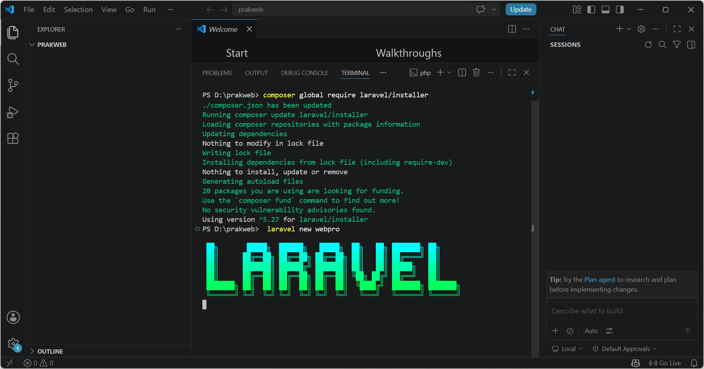
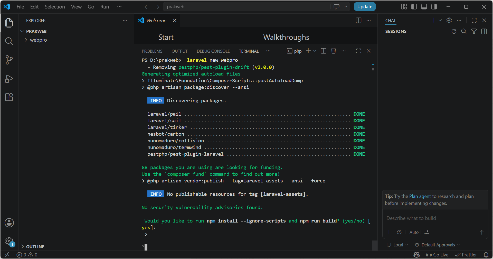
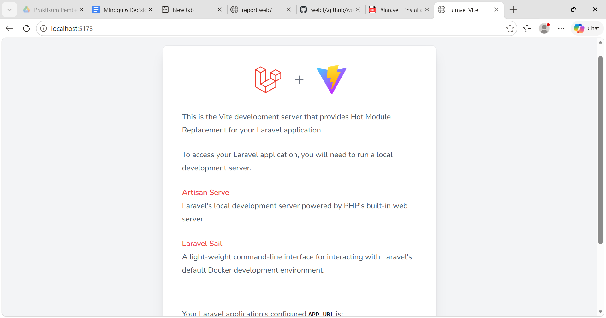
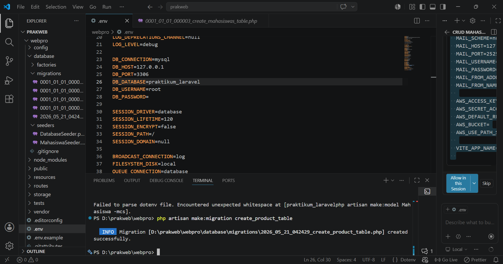

Daftar Laporan
Pilih laporan di bawah ini untuk menampilkan isinya:
Laporan PWeb
Kumpulan laporan praktikum Pemrograman Web meliputi Konfigurasi Laravel, CRUD, Auth & Role Management, hingga Security.
Detail Laporan PWeb
Praktikum 7 - Konfigurasi Laravel
Pendahuluan
Laravel merupakan salah satu framework PHP yang populer dan dikembangkan oleh Taylor Otwell. Laravel adalah framework open source yang digunakan untuk mengembangkan aplikasi berbasis web dengan arsitektur MVC (Model - View - Controller). Framework ini dirancang untuk mempermudah proses pengembangan aplikasi web modern dengan sintaks yang elegan, sederhana, dan mudah dipahami.
Laravel menyediakan berbagai fitur yang membantu developer dalam membangun aplikasi web seperti Eloquent ORM, Blade Template Engine, routing, middleware, validasi form, dan Artisan CLI. Dengan berbagai fitur tersebut Laravel menjadi salah satu framework yang banyak digunakan dalam pengembangan aplikasi web modern.
Tujuan Praktikum
- Memahami konsep dasar framework Laravel
- Melakukan instalasi Laravel dan tools pendukung
- Membuat project Laravel baru
- Menjalankan Laravel menggunakan artisan
- Memahami konsep MVC Laravel
Langkah-Langkah Praktikum
1. Install XAMPP
XAMPP merupakan software yang digunakan sebagai web server lokal. Di dalam XAMPP sudah tersedia Apache, PHP, dan PhpMyAdmin yang digunakan untuk menjalankan project Laravel pada komputer lokal. Setelah proses instalasi selesai, folder project biasanya berada pada direktori C:\xampp\htdocs.
2. Install Composer
Composer merupakan package manager PHP yang digunakan untuk mengelola dependency atau package yang dibutuhkan Laravel. Composer digunakan saat proses instalasi framework Laravel maupun package tambahan lainnya.

3. Install NPM
NPM (Node Package Manager) digunakan untuk mengelola package JavaScript pada Laravel. NPM biasanya digunakan untuk menjalankan Vite, Bootstrap, serta dependency frontend lainnya agar tampilan aplikasi Laravel dapat berjalan dengan baik.
npm install npm run dev

4. Membuat Project Laravel
Setelah Composer berhasil diinstall, langkah selanjutnya yaitu membuat project Laravel baru melalui terminal atau CMD dengan menggunakan perintah berikut.
composer create-project laravel/laravel belajar-laravel --prefer-dist

5. Menjalankan Laravel
Setelah project berhasil dibuat, masuk ke folder project Laravel kemudian jalankan server bawaan Laravel menggunakan perintah artisan serve agar project dapat diakses melalui browser.
cd belajar-laravel php artisan serve

6. Membuka Laravel di Browser
Setelah server Laravel berhasil dijalankan, project dapat diakses melalui browser dengan alamat berikut.
http://127.0.0.1:8000
Jika berhasil, maka halaman default Laravel akan tampil pada browser.
7. Konsep MVC Laravel
Laravel menggunakan konsep MVC (Model View Controller). Model digunakan untuk mengelola data dan database, View digunakan untuk membuat tampilan antarmuka aplikasi, sedangkan Controller digunakan untuk menangani request dan response serta menghubungkan Model dengan View.
php artisan make:model NamaModel php artisan make:controller NamaController
Alur kerja MVC pada Laravel yaitu user mengirim request ke Controller, kemudian Controller memproses data melalui Model yang terhubung ke database, lalu hasilnya ditampilkan kembali kepada user melalui View.
Hasil Praktikum
Project Laravel berhasil dibuat dan dijalankan pada browser menggunakan localhost Laravel. Halaman welcome Laravel berhasil tampil menandakan konfigurasi framework berjalan dengan baik.

Kesimpulan
Berdasarkan praktikum yang telah dilakukan, dapat disimpulkan bahwa Laravel merupakan framework PHP yang membantu proses pengembangan aplikasi web karena memiliki struktur yang rapi dan fitur yang lengkap. Melalui praktikum ini berhasil dilakukan instalasi Laravel beserta tools pendukung seperti XAMPP, Composer, dan NPM serta berhasil membuat dan menjalankan project Laravel menggunakan perintah artisan serve. Praktikum ini juga memberikan pemahaman dasar mengenai konsep MVC pada framework Laravel.
Praktikum 8 - Laravel CRUD
Pendahuluan
Laravel merupakan framework PHP yang digunakan untuk membangun aplikasi web modern dengan konsep MVC (Model View Controller). Laravel menyediakan berbagai fitur yang mempermudah developer dalam proses pengembangan aplikasi web seperti migration, seeding, routing, model, controller, dan blade template.
Pada praktikum ini dilakukan pembuatan aplikasi CRUD sederhana menggunakan Laravel mulai dari konfigurasi database hingga menampilkan data menggunakan view blade.
Tujuan Praktikum
- Memahami konsep migration Laravel
- Memahami penggunaan seeding database
- Memahami routing Laravel
- Membuat model dan controller
- Membuat view menggunakan blade template
- Membuat CRUD sederhana Laravel
Langkah-Langkah Praktikum
1. Konfigurasi Database
Langkah pertama yaitu melakukan konfigurasi database pada file .env agar Laravel dapat terhubung dengan MySQL.
DB_CONNECTION=mysql DB_HOST=127.0.0.1 DB_PORT=3306 DB_DATABASE=praktikum_laravel DB_USERNAME=root DB_PASSWORD=

2. Migration
Migration digunakan untuk membuat struktur tabel database menggunakan kode program Laravel.
php artisan make:migration create_products_table
Setelah migration dibuat, isi struktur tabel products seperti berikut.
Schema::create('products', function (Blueprint $table) {
$table->id();
$table->string('name');
$table->integer('price');
$table->text('description');
$table->timestamps();
});

3. Menjalankan Migration
Jalankan migration menggunakan artisan agar tabel otomatis dibuat pada database.
php artisan migrate

4. Seeding Database
Seeding digunakan untuk menambahkan data awal atau data dummy ke database.
php artisan make:seeder ProductSeeder
Tambahkan data pada file ProductSeeder.php.
DB::table('products')->insert([
[
'name' => 'Laptop',
'price' => 7000000,
'description' => 'Laptop untuk pemrograman'
],
[
'name' => 'Mouse',
'price' => 150000,
'description' => 'Mouse wireless'
]
]);

Setelah data seeder selesai dibuat, jalankan perintah berikut.
php artisan db:seed

5. Routing Laravel
Routing digunakan untuk menentukan URL dan halaman yang akan ditampilkan oleh aplikasi Laravel.
Route::resource('products', ProductController::class);
6. Membuat Model
Model digunakan untuk berinteraksi dengan database menggunakan Eloquent ORM Laravel.
php artisan make:model Product
class Product extends Model
{
protected $fillable = [
'name',
'price',
'description'
];
}
7. Membuat Controller
Controller digunakan untuk mengatur logika aplikasi dan menghubungkan model dengan view.
php artisan make:controller ProductController
class ProductController extends Controller
{
public function index()
{
$products = Product::all();
return view('products',
compact('products'));
}
}
8. Membuat View Blade
View digunakan untuk menampilkan halaman antarmuka kepada user.
<h1>Daftar Produk</h1>
<ul>
@foreach ($products as $product)
<li>
{{ $product->name }}
</li>
@endforeach
</ul>
9. Resource Route
Resource route digunakan untuk mempermudah pembuatan CRUD secara otomatis pada Laravel.
Route::resource('products', ProductController::class);
Hasil Praktikum
Berdasarkan praktikum yang telah dilakukan, aplikasi Laravel berhasil dijalankan dengan baik. Migration berhasil membuat tabel database, seeding berhasil menambahkan data awal, routing berhasil menghubungkan URL, serta model, controller, dan view berhasil digunakan untuk menampilkan data produk.
Kesimpulan
Berdasarkan praktikum yang telah dilakukan dapat disimpulkan bahwa Laravel mempermudah proses pengembangan aplikasi web menggunakan konsep MVC. Fitur migration, seeding, routing, model, controller, dan blade template membantu developer dalam membuat aplikasi CRUD secara lebih terstruktur, rapi, dan efisien.
Link Github Project
Source code project Laravel CRUD dapat diakses melalui link Github berikut:
Github ProjectPraktikum 9 - Laravel Relationship CRUD
Pendahuluan
Laravel merupakan framework PHP yang digunakan untuk membangun aplikasi web modern dengan konsep MVC (Model View Controller). Laravel menyediakan berbagai fitur yang mempermudah developer dalam proses pengembangan aplikasi web seperti migration, seeding, routing, model, controller, dan blade template.
Pada praktikum 9 ini dilakukan pembuatan aplikasi CRUD Mahasiswa menggunakan Laravel mulai dari konfigurasi database hingga menampilkan data relasional antartabel menggunakan view blade.
Tujuan Praktikum
- Memahami konsep migration Laravel dan Foreign Key constraints.
- Memahami penggunaan seeding database untuk mengisi data sampel otomatis.
- Memahami routing resource Laravel.
- Membuat model dan mendefinisikan Eloquent Relationship (One-to-Many & Many-to-Many).
- Membuat controller untuk menangani logika sinkronisasi tabel pivot dengan method attach() dan sync().
- Membuat view dinamis terintegrasi menggunakan blade template dan Bootstrap 5.
Langkah-Langkah Praktikum
Tahap 1: Membuat Migration (Struktur Database)
Migration digunakan untuk membuat tabel-tabel di database lewat kode PHP. Kita akan membuat 4 tabel: majors, students, subjects, dan tabel pivot student_subject.
Step 1.1: Migration Tabel majors
Buka terminal di folder project Laravel Anda, lalu ketik perintah berikut:
php artisan make:migration create_majors_table
Buka file migration tersebut di text editor Anda, lalu ubah fungsinya menjadi seperti ini:
public function up(){
Schema::create('majors', function (Blueprint $table) {
$table->id(); // Primary Key
$table->string('name');
$table->timestamps(); // create_at & updated_at
});
}
.png)
Step 1.2: Migration Tabel students
Jalankan perintah di terminal:
php artisan make:migration create_students_table
Buka file migration-nya dan isi dengan kode berikut:
public function up(){
Schema::create('students', function (Blueprint $table) {
$table->id();
$table->string('nim')->unique(); // Unique Key
$table->string('name');
$table->text('address');
// Foreign Key ke tabel majors.id, jika major dihapus, student ikut terhapus
$table->foreignId('major_id')->constrained('majors')->onDelete('cascade');
$table->timestamps();
});
}
.png)
Step 1.3: Migration Tabel subjects
Jalankan perintah di terminal:
php artisan make:migration create_subjects_table
Buka file migration-nya dan isi dengan kode berikut:
public function up(){
Schema::create('subjects', function (Blueprint $table) {
$table->id();
$table->string('name');
$table->integer('sks');
$table->timestamps();
});
}
.png)
Step 1.4: Migration Tabel Pivot student_subject
Tabel ini digunakan untuk menghubungkan relasi Many-to-Many antara Student dan Subject. Jalankan perintah di terminal:
php artisan make:migration create_student_subject_table
Buka file migration-nya dan pastikan kodenya ditulis di dalam Schema::create dengan benar:
public function up(){
Schema::create('student_subject', function (Blueprint $table) {
$table->id();
$table->foreignId('student_id')->constrained('students')->onDelete('cascade');
$table->foreignId('subject_id')->constrained('subjects')->onDelete('cascade');
$table->timestamps();
// Mencegah duplikasi kombinasi student_id dan subject_id
$table->unique(['student_id', 'subject_id']);
});
}
.png)
Step 1.5: Eksekusi Migration
Sekarang kita kirim struktur di atas ke dalam database asli. Jalankan:
php artisan migrate
.png)
Tahap 2: Membuat Model & Eloquent Relationship
Model adalah representasi tabel database di dalam kode PHP kita. Di sini kita akan mendefinisikan hubungan antar tabel tersebut.
Step 2.1: Model Major
Jalankan perintah di terminal:
php artisan make:model Major
Buka app/Models/Major.php dan sesuaikan kodenya:
<?php
namespace App\Models;
use Illuminate\Database\Eloquent\Factories\HasFactory;
use Illuminate\Database\Eloquent\Model;
class Major extends Model{
use HasFactory;
protected $fillable = ['name'];
// Relasi: Satu Jurusan punya banyak Mahasiswa (One-to-Many)
public function students()
{
return $this->hasMany(Student::class);
}
}
.png)
Step 2.2: Model Student
Jalankan perintah di terminal:
php artisan make:model Student
Buka app/Models/Student.php dan ubah kodenya:
<?php
namespace App\Models;
use Illuminate\Database\Eloquent\Factories\HasFactory;
use Illuminate\Database\Eloquent\Model;
class Student extends Model{
use HasFactory;
protected $fillable = ['nim', 'name', 'address', 'major_id'];
// Relasi: Banyak Mahasiswa dimiliki oleh satu Jurusan (Many-to-One / BelongsTo)
public function major()
{
return $this->belongsTo(Major::class);
}
// Relasi: Banyak Mahasiswa mengambil banyak Mata Kuliah (Many-to-Many)
public function subjects()
{
return $this->belongsToMany(Subject::class);
}
}
.png)
Step 2.3: Model Subject
Jalankan perintah di terminal:
php artisan make:model Subject
Buka app/Models/Subject.php dan ganti kodenya:
<?php
namespace App\Models;
use Illuminate\Database\Eloquent\Factories\HasFactory;
use Illuminate\Database\Eloquent\Model;
class Subject extends Model{
use HasFactory;
protected $fillable = ['name', 'sks'];
// Relasi: Banyak Mata Kuliah diambil oleh banyak Mahasiswa (Many-to-Many)
public function students()
{
return $this->belongsToMany(Student::class);
}
}
.png)
Tahap 3: Membuat Seeder (Data Sample Otomatis)
Seeder dipakai untuk mengisi database dengan data dummy agar kita bisa menguji aplikasinya dengan cepat.
Step 3.1: MajorSeeder, SubjectSeeder, dan StudentSeeder
Jalankan pembuatan seeder di terminal secara bergantian, lalu isi kodenya sesuai panduan relasi akademik.
php artisan make:seeder MajorSeeder php artisan make:seeder SubjectSeeder php artisan make:seeder StudentSeeder
.png)
Step 3.4: Daftarkan dan Jalankan Seeder
Buka file induk seeder di database/seeders/DatabaseSeeder.php, panggil seeder yang sudah dibuat, lalu eksekusi pengisian data lewat terminal:
php artisan db:seed
.png)
Tahap 4: Membuat Controller (Logika Bisnis)
Controller akan menjembatani antara data dari model untuk dilempar ke halaman web (View). Jalankan perintah di terminal:
php artisan make:controller StudentController
Buka app/Http/Controllers/StudentController.php dan lengkapi logika CRUD beserta fungsi sinkronisasi relasinya:
<?php
namespace App\Http\Controllers;
use App\Models\Student;
use App\Models\Major;
use App\Models\Subject;
use Illuminate\Http\Request;
class StudentController extends Controller{
public function index()
{
$students = Student::with(['major', 'subjects'])->get();
return view('students.index', compact('students'));
}
public function create()
{
$majors = Major::all();
$subjects = Subject::all();
return view('students.create', compact('majors', 'subjects'));
}
public function store(Request $request)
{
$request->validate([
'nim' => 'required|unique:students',
'name' => 'required',
'address' => 'required',
'major_id' => 'required|exists:majors,id',
'subjects' => 'required|array',
'subjects.*' => 'exists:subjects,id',
]);
$student = Student::create($request->only(['nim', 'name', 'address', 'major_id']));
$student->subjects()->attach($request->subjects);
return redirect()->route('students.index')->with('success', 'Student created successfully');
}
public function show($id)
{
$student = Student::with(['major', 'subjects'])->findOrFail($id);
return view('students.show', compact('student'));
}
public function edit($id)
{
$student = Student::with('subjects')->findOrFail($id);
$majors = Major::all();
$subjects = Subject::all();
return view('students.edit', compact('student', 'majors', 'subjects'));
}
public function update(Request $request, $id)
{
$student = Student::findOrFail($id);
$request->validate([
'nim' => 'required|unique:students,nim,' . $student->id,
'name' => 'required',
'address' => 'required',
'major_id' => 'required|exists:majors,id',
'subjects' => 'required|array',
'subjects.*' => 'exists:subjects,id',
]);
$student->update($request->only(['nim', 'name', 'address', 'major_id']));
$student->subjects()->sync($request->subjects);
return redirect()->route('students.index')->with('success', 'Student updated successfully');
}
public function destroy($id)
{
$student = Student::findOrFail($id);
$student->subjects()->detach();
$student->delete();
return redirect()->route('students.index')->with('success', 'Student deleted successfully');
}
}
.png)
Tahap 5 & 6: Menghubungkan Route dan Membuat Front-End Views
Mendaftarkan resource route di file routes/web.php dan membangun sistem antarmuka berbasis blade template menggunakan framework Bootstrap 5.
Step 6.1: Layout Utama (resources/views/layouts/app.blade.php)
.png)
Step 6.2: Halaman Daftar (resources/views/students/index.blade.php)
.png)
Step 6.3: Halaman Tambah (resources/views/students/create.blade.php)
.png)
Hasil Praktikum
Berdasarkan praktikum 9 yang telah dilakukan, aplikasi Laravel berhasil dijalankan dengan baik. Migration berhasil membuat tabel database beserta konstrain relasi kunci tamu (foreign key), seeding berhasil menambahkan data awal, routing berhasil menghubungkan URL, serta model, controller, dan view berhasil digunakan untuk mengolah data hubungan antartabel mahasiswa secara dinamis.
Kesimpulan
Berdasarkan praktikum yang telah dilakukan dapat disimpulkan bahwa Laravel mempermudah proses pengembangan aplikasi web menggunakan konsep MVC. Fitur migration, seeding, routing, model, controller, dan blade template membantu developer dalam membuat aplikasi CRUD data relasional (One-to-Many dan Many-to-Many) secara lebih terstruktur, rapi, aman, dan efisien.
Link Github Project
Source code project Laravel CRUD dapat diakses melalui link Github berikut:
Github ProjectPraktikum 10 - Laravel UI Bootstrap dan Templating
Pendahuluan
Laravel merupakan salah satu framework PHP yang menggunakan arsitektur MVC (Model-View-Controller) untuk mempermudah pengembangan aplikasi web yang terstruktur, rapi, dan memiliki tingkat keamanan yang baik. Dalam proses pengembangan sistem informasi modern, fitur autentikasi user (Login & Register) serta antarmuka (user interface) yang responsif dan user-friendly merupakan komponen yang sangat krusial.
Laravel menyediakan scaffolding autentikasi bawaan menggunakan package laravel/ui yang
terintegrasi langsung dengan framework CSS Bootstrap. Fitur ini sangat mempermudah developer dalam membangun
sistem manajemen user awal secara efisien serta mempermudah pengelolaan komponen antarmuka aplikasi.
Tujuan Praktikum
- Mahasiswa mampu melakukan instalasi dan inisialisasi project baru menggunakan framework Laravel.
- Mahasiswa mampu mengonfigurasi koneksi database pada Laravel melalui file lingkungan (.env).
- Mahasiswa mampu mengimplementasikan fitur autentikasi bawaan (User Authentication) menggunakan Bootstrap.
- Mahasiswa mampu memodifikasi (custom) struktur tabel database melalui sistem migration dan melakukan pengisian data awal menggunakan seeder.
- Mahasiswa mampu mengintegrasikan template eksternal (SB Admin 2) ke dalam sistem layouting Laravel (Blade Templating).
- Mahasiswa mampu membangun fungsi CRUD (Create, Read, Update, Delete) secara penuh untuk manajemen data user menggunakan Resource Controller.
Langkah Kerja dan Pembahasan
Tahap 1: Pembuatan Project Laravel
Langkah pertama dalam praktikum ini adalah membuat workspace baru di dalam direktori htdocs
dengan nama project laravel-sisfo. Proses instalasi dilakukan menggunakan package manager
Composer melalui terminal/command prompt dengan menjalankan perintah berikut:
composer create-project laravel/laravel=^9.0 laravel-sisfo --prefer-dist
Setelah proses instalasi selesai, masuk ke dalam direktori project lalu jalankan perintah
php artisan serve untuk menjalankan server lokal Laravel. Buka browser dan akses URL http://127.0.0.1:8000 untuk memastikan project default
berhasil berjalan.
Tahap 2: Konfigurasi Database
Koneksi database diatur dengan membuka file konfigurasi .env yang terletak pada root folder
project. Ubah parameter database untuk menyesuaikan dengan database yang akan digunakan, dalam hal ini
menggunakan database bernama laravel_sisfo:
DB_CONNECTION=sqlite DB_HOST=127.0.0.1 DB_PORT=3306 DB_DATABASE=laravel_sisfo DB_USERNAME=root DB_PASSWORD=
Tahap 3: Implementasi User Authentication (Laravel/UI)
Fitur autentikasi user pada studi kasus sistem informasi sekolah ini memanfaatkan package scaffolding bawaan
laravel/ui dengan langkah-langkah sebagai berikut:
1. Menginstall package laravel/ui melalui terminal dengan perintah:
composer require laravel/ui
2. Melakukan generate scaffolding fitur autentikasi yang terintegrasi dengan CSS Bootstrap menggunakan perintah:
php artisan ui bootstrap --auth
3. Menginstall package frontend tambahan dan melakukan compile asset bawaan menggunakan Node Package Manager (NPM) agar halaman login/register ter-generate otomatis:
npm install && npm run dev
Proses ini secara otomatis meng-generate controller otentikasi (Auth Controllers) serta file-file view Blade seperti login, register, dan folder passwords.
4. Menjalankan migrasi database awal untuk membuat struktur tabel default autentikasi bawaan Laravel:
php artisan migrate
Melakukan pengujian akses halaman login, register, dan home default pada browser melalui URL project.
.png)
(Halaman Login Bawaan)
.png)
(Halaman Register Bawaan)
.png)
(Halaman Home Setelah Berhasil Login Bawaan)
Tahap 4: Custom Table Users dan Seeding Data Admin
Struktur tabel users default perlu ditambahkan beberapa kolom baru seperti username, level, dan status untuk menyesuaikan dengan kebutuhan data Sistem Informasi Sekolah. Membuat file migrasi tambahan untuk memodifikasi tabel users yang sudah ada dengan perintah:
php artisan make:migration costum_table_users
Buka file migrasi costum_table_users.php yang terbentuk, lalu tambahkan kode program pada
method up() untuk mendefinisikan kolom baru, serta method down() untuk fungsi
dropColumn:
public function up()
{
Schema::table('users', function (Blueprint $table) {
$table->string("username")->unique();
$table->string("level");
$table->enum("status", ["ACTIVE", "INACTIVE"]);
});
}
Jalankan perintah php artisan migrate kembali di terminal agar modifikasi kolom tersebut
diterapkan, kemudian cek struktur tabelnya.
.png)
(Struktur Kolom Tabel Users Sesudah Ditambah)
Membuat data user admin awal secara otomatis menggunakan fitur seeding dengan perintah:
php artisan make:seeder AdminSeeder
Buka file AdminSeeder.php di folder database/seeders/ dan definisikan data akun
admin default dengan enkripsi password menggunakan \Hash::make('12345678'). Jalankan proses
seeding ke database menggunakan perintah:
php artisan db:seed --class AdminSeeder
Tahap 5: Templating Layout Menggunakan SB Admin 2
Langkah selanjutnya adalah merombak tampilan dashboard default menggunakan template eksternal Bootstrap
bernama SB Admin 2. Ekstrak file template SB Admin 2 dan salin seluruh folder asset-nya ke dalam direktori
public/sbadmin pada project Laravel.
Membuat file master layout global bernama main.blade.php di dalam folder
resources/views/layouts/. Struktur master layout ini memanggil bagian sidebar dan topbar secara
terpisah menggunakan perintah @include serta mendefinisikan tag @yield. Memotong
bagian kode login bawaan untuk disesuaikan dengan asset template SB Admin.
.png)
(Kodingan View Login Head)
.png)
(Kodingan View Login Form)
.png)
(Kodingan View Login Scripts)
Jalankan URL login untuk melihat perubahan interface layouting baru.
.png)
(Tampilan Baru Interface Halaman Login Biru)
Mengatur dan membagi susunan file master layout global utama aplikasi.
.png)
(Kodingan main.blade.php Bagian Atas)
.png)
(Kodingan main.blade.php Bagian Bawah)
Menyesuaikan file halaman resources/views/home.blade.php milik user agar mewarisi layout master
yang baru dibuat:
@extends('layouts.main')
@section("judul") Dashboard @endsection
@section('konten')
<p>dashboard</p>
@endsection
.png)
(Visual Halaman Dashboard Baru SB Admin 2)
Tahap 6: Fitur Manajemen Users (CRUD)
Sistem manajemen user dibangun secara penuh menggunakan Resource Controller untuk menangani proses Create, Read, Update, dan Delete data.
1. Membuat resource controller baru untuk entitas user melalui perintah terminal:
php artisan make:controller UserController -resource
2. Mendaftarkan route resource UserController pada file routing utama
routes/web.php:
use App\Http\Controllers\UserController;
Route::resource('users', UserController::class);
.png)
(Potongan Kodingan File routes/web.php)
.png)
(Hasil Daftar Endpoint Pemetaan php artisan route:list)
3. Mengonfigurasi logika penuh di dalam file controller utama untuk mengontrol jalannya data CRUD.
.png)
(Source Code UserController.php Method index, create, store)
.png)
(Source Code UserController.php Method edit, update, destroy)
4. CREATE (Tambah User): Mengatur method create() pada
UserController untuk mengembalikan view form tambah data (user.create). Form input
pada create.blade.php dibuat menggunakan framework Bootstrap dan dilengkapi dengan Select2
multiple-select untuk memilih level user.
.png)
(Source Code File user/create.blade.php Bagian Atas)
.png)
(Source Code File user/create.blade.php Bagian Bawah)
.png)
(Potongan Kode Method create() di Controller)
.png)
(Visual Halaman Browser /users/create Form Kosong)
5. READ (Tampilkan List): Mengatur method index() pada controller untuk
mengambil keseluruhan data dari database via model User::all() lalu mengirimkannya ke view
user/index.blade.php. Tampilan tabel diintegrasikan dengan library DataTables.
.png)
(Potongan Kode Method index() di Controller)
.png)
(Potongan Kode Tombol Tambah User Berupa Tag Anchor)
.png)
(Tampilan Tabel List Data User Awal di Browser)
6. UPDATE (Edit User): Tombol edit pada baris tabel mengarahkan endpoint ke route
users.edit dengan menyertakan ID user. Method edit() menangkap ID tersebut,
mencari entitas dengan User::findOrFail($id), dan menampilkannya kembali pada form edit.
Pengiriman data pembaruan menggunakan form method spoofing PUT untuk diproses oleh method
update() di controller.
.png)
(Source Code user/index.blade.php loop @foreach)
.png)
(Source Code user/index.blade.php pemanggilan DataTables)
.png)
(Source Code File user/edit.blade.php Bagian Atas)
.png)
(Source Code File user/edit.blade.php Bagian Tengah)
.png)
(Source Code File user/edit.blade.php Bagian Bawah)
.png)
(Potongan Kode Method update() di Controller)
.png)
(Visual Proses Mengubah/Mengedit Data Kolom User di Browser)
.png)
(Visual Munculnya Alert Success Warna Hijau)
7. DELETE (Hapus User): Tombol hapus dibungkus di dalam elemen form bermethod
POST dengan perintah spoofing method DELETE. Tombol dilengkapi JavaScript
onsubmit="return confirm(...)" untuk memicu pop-up dialog konfirmasi. Ketika disetujui, data
akan dihapus oleh action destroy() di controller menggunakan fungsi
$user->delete().
.png)
(Potongan Kode Fungsi Hapus di File Index)
.png)
(Potongan Kode Method destroy() di Controller)
.png)
(Visual Tampilan Pop-up Dialog Konfirmasi Hapus Data User)
.png)
(Visual Tampilan Tabel List Akhir Setelah Baris Terhapus)
8. MENAMBAHKAN MENU USERS: Langkah terakhir adalah mendaftarkan modul menu users ke komponen sidebar agar mempermudah navigasi perpindahan halaman aplikasi.
.png)
(Potongan Kode Menu Users pada File sidebar.blade.php)
.png)
(Tampilan Visual Menu Navigasi Baru "Users")
Kesimpulan
Berdasarkan hasil pelaksanaan praktikum pemrograman web menggunakan Laravel 9 dengan studi kasus Sistem Informasi Sekolah, dapat ditarik beberapa kesimpulan sebagai berikut:
- Fitur User Authentication bawaan framework Laravel terbukti sangat memotong waktu development karena seluruh struktur controller, routing, dan komponen view dasar login/register dapat dibuat secara otomatis dan instan.
- Fleksibilitas sistem migration pada Laravel mempermudah pengembang dalam melakukan modifikasi atau kustomisasi struktur tabel database tanpa perlu berinteraksi langsung secara manual di DBMS.
- Penerapan sistem Blade Templating (master layouting) menggunakan perintah
@extends,@include, dan@yieldmenghasilkan pengelolaan interface web yang modular, rapi, dan dinamis saat diintegrasikan dengan template eksternal pihak ketiga. - Penggunaan Resource Controller dan Resource Routing pada Laravel menyederhanakan pengelolaan endpoint untuk fungsionalitas CRUD secara penuh, sehingga kode program aplikasi menjadi lebih rapi, konsisten, dan memenuhi standar arsitektur web modern.
Detail Laporan Aplikasi Mobile
Praktikum 1 - Input Widgets dan Basic Form
1. Pendahuluan
Pengembangan aplikasi mobile modern menuntut pengelolaan interaksi pengguna yang responsif, terstruktur, dan
tervalidasi dengan baik. Pada framework Flutter, penanganan input dari pengguna dilakukan melalui komponen
formulir dasar (Basic Form) dan Input Widgets, seperti TextField, TextFormField,
CheckBox, Switch, Dropdown, Radio,
DatePicker, hingga komponen antarmuka dialog pendukung seperti BottomSheet dan
SnackBar. Komponen-komponen ini berfungsi menangkap data, menampilkan field input, memvalidasi
format data secara akurat, serta mengambil nilai inputan untuk diproses pada tingkat logika aplikasi.
Dalam praktik pengembangannya, Flutter menyediakan dua komponen utama untuk menangani input teks, yaitu
TextField dan TextFormField. TextField digunakan untuk penangkapan
teks sederhana secara langsung dari keyboard dengan pengelolaan state mandiri via
TextEditingController, di mana validasi dan pesan kesalahan harus ditangani secara manual.
Sebaliknya, TextFormField merupakan widget pembungkus TextField yang terintegrasi
langsung dengan logika Form. Komponen ini dilengkapi dengan properti bawaan validator untuk
memeriksa aturan input secara otomatis dan menampilkan pesan kesalahan di bawah field jika data tidak
sesuai, serta dapat dikontrol secara terpusat menggunakan FormState.
2. Tujuan Praktikum
- Membuat dan mengonfigurasi berbagai jenis Input Widgets pada Flutter.
- Mengontrol dan membaca nilai input pengguna menggunakan
TextEditingController. - Menerapkan mekanisme validasi data menggunakan
TextFormField,FormState, danGlobalKey. - Memahami pengelolaan siklus hidup widget, pelepasan memori (metode
dispose()), serta peremajaan antarmuka menggunakansetState().
3. Langkah-Langkah Praktikum
3.1 Implementation Basic Form dengan TextField
Berikut merupakan kode program pembuatan form dasar menggunakan TextField untuk mengambil input
nama dan menampilkannya pada SnackBar:
Kode Program form_textfield.dart

Hasil Running Basic Form TextField

3.2 Implementasi Form Validasi dengan TextFormField
Berikut merupakan kode program terstruktur menggunakan Form,
GlobalKey<FormState>, serta validasi untuk input Nama dan Email beserta hasil
pengujiannya:
Kode Program form-textformfield.dart

Tampilan Form TextFormField

Hasil Validasi TextFormField Berhasil

4. Tugas dan Penugasan Praktikum
Tugas: Form Pendaftaran Pengguna
Membuat form pendaftaran pengguna yang terdiri dari 4 field: Nama, Email, Password, dan
Confirm Password dengan kriteria:
- Memisahkan berkas proyek menjadi
main.dartdanuser_registration_form.dart. - Aturan validasi: Nama, Email, Password, dan Confirm Password wajib diisi. Email wajib memiliki karakter
'
@', serta Password dan Confirm Password harus cocok/sama. - Menggunakan
StatefulWidgetdan pemanggilan fungsi_submitForm()saat tombol submit ditekan.
1. main.dart

2. user_registration_form.dart (Bagian 1)

3. user_registration_form.dart (Bagian 2)

Hasil Pengujian
Tampilan notifikasi SnackBar saat data berhasil diisi dan disubmit:

5. Kesimpulan
- Diferensiasi TextField dan TextFormField:
TextFieldtepat untuk penangkapan teks sederhana tanpa aturan validasi, sedangkanTextFormFielddirancang terintegrasi dengan widgetFormuntuk validasi deklaratif yang rapi. - Manajemen Form dengan GlobalKey:
GlobalKey<FormState>memusatkan validasi formulir, di mana satu pemanggilanvalidate()mengeksekusi semua validator secara serentak. - Pembersihan Memori (dispose): Setiap instance
TextEditingControllerwajib dibersihkan di methoddispose()untuk mencegah memory leak. - Struktur Modular: Pemisahan file ke
main.dartdanuser_registration_form.dartmewujudkan kode yang terstruktur (clean code) dan memudahkan pemeliharaan sistem.
Praktikum 2 - Pengenalan Widgets & Layouting
Modul 1: Pengenalan Widgets (Stateless, Stateful, & Manajemen State Dasar)
1. Pendahuluan
Pengembangan antarmuka pada framework Flutter dibangun berbasis hirarki komponen yang disebut
Widget. Untuk mengelola bagaimana komponen antarmuka merespons perubahan data dan interaksi
pengguna, Flutter membedakan komponennya menjadi dua jenis utama, yaitu StatelessWidget dan
StatefulWidget.
StatelessWidget digunakan untuk elemen antarmuka yang bersifat statis, di mana tampilannya
tidak pernah berubah setelah di-render pertama kali di layar. Di sisi lain, StatefulWidget
digunakan untuk elemen antarmuka dinamis yang perlu diperbarui sebagai respons terhadap interaksi pengguna
dengan memicu metode setState().
2. Tujuan Praktikum
- Memahami kerangka dasar dan struktur hierarki aplikasi Flutter menggunakan
MaterialAppdanScaffold. - Membedakan penggunaan serta skenario penerapannya antara
StatelessWidgetdanStatefulWidget. - Menerapkan pengelolaan state dasar menggunakan fungsi
setState()untuk antarmuka yang interaktif.
3. Langkah-Langkah Praktikum
Membangun antarmuka dasar yang menggabungkan GreetingWidget (StatelessWidget) dan
BalanceCardWidget (StatefulWidget) untuk menyembunyikan/menampilkan saldo:
Kode Program main.dart (Praktikum 1):

Hasil Running Praktikum 1 (Langkah Awal):

4. Tugas dan Penugasan Praktikum
1. Mengubah warna latar kartu saldo dari Colors.blueAccent menjadi hijau emerald
(Colors.teal).
2. Menambahkan teks statis "No. Rekening: 1234-5678" di bawah nominal saldo.
Kode Program Terintegrasi main.dart (Tugas Modul 1):

Hasil Pengujian Tugas Modul 1:

Modul 2: Layouting & Styling (Row, Column, Container, dan ListTile)
1. Pendahuluan
Pengaturan tata letak secara horizontal dan vertikal dicapai melalui widget Row dan
Column. Untuk menampilkan daftar data secara linier dan terstruktur digunakan komponen
ListTile dengan leading, title, subtitle, dan
trailing. Selain itu digunakan Container untuk margin/padding/dekorasi, serta
SingleChildScrollView untuk mencegah galat overflow.
2. Tujuan Praktikum
- Menerapkan widget
Rowuntuk menyusun deretan tombol aksi secara horizontal. - Menerapkan widget
Columnuntuk menyusun daftar riwayat transaksi secara vertikal. - Mengatur properti padding, margin, dan dekorasi menggunakan
Container. - Mengimplementasikan widget
ListTileuntuk menyusun daftar informasi rapi. - Mencegah layout overflow dengan menerapkan
SingleChildScrollView.
3. Langkah-Langkah Praktikum
Mengintegrasikan widget ActionButtonsWidget (Row) dan
RecentTransactionsWidget (Column + ListTile) ke dalam layar dashboard
vertikal:
Kode Program lib/main.dart (Praktikum 2):

Hasil Running Praktikum 2 (Langkah Awal):

4. Tugas dan Penugasan Praktikum
1. Styling trailing text: Pengeluaran bertanda minus merah (Colors.red), pemasukan bertanda
plus hijau (Colors.green).
2. Menambahkan 2 item transaksi baru fiktif ("Cashback Belanja" dan "Tiket Bioskop").
Kode Program RecentTransactionsWidget (Tugas Modul 2):

Hasil Pengujian Tugas Modul 2:

5. Kesimpulan
RowdanColumnefektif mengatur tata letak horizontal dan vertikal secara dinamis.- Widget
ListTilemempermudah pembuatan baris daftar secara instan dan rapi. SingleChildScrollViewpenting mencegah error bottom overflow saat konten melebihi ukuran layar device.